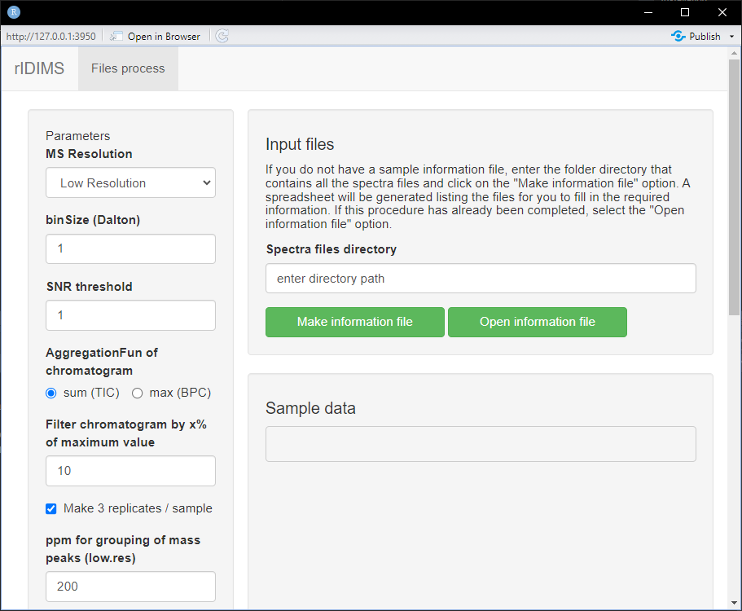
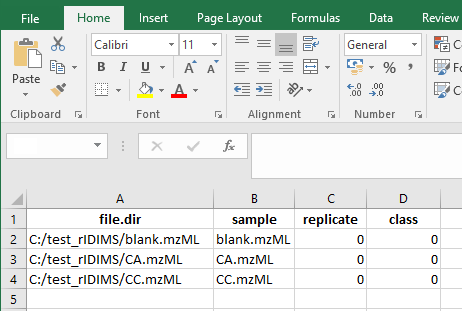
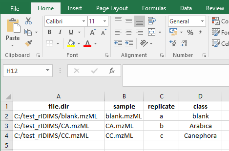
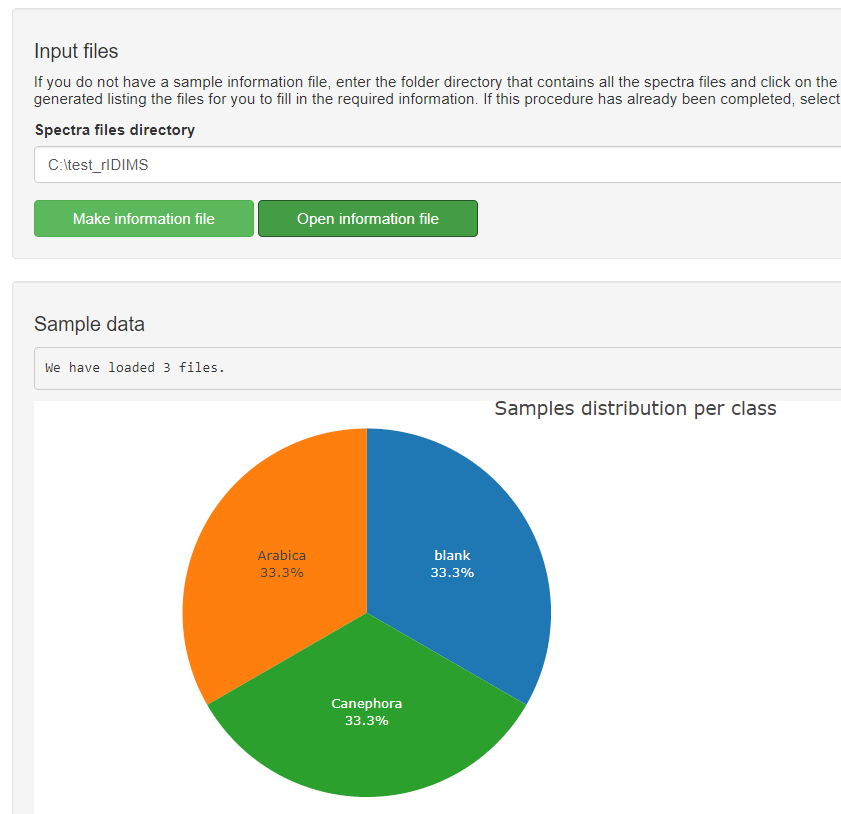
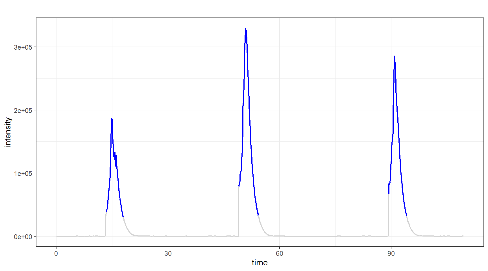
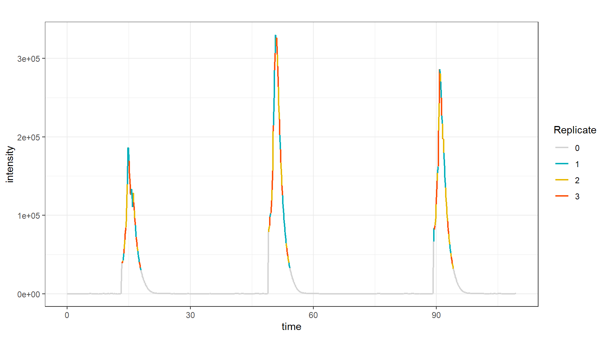
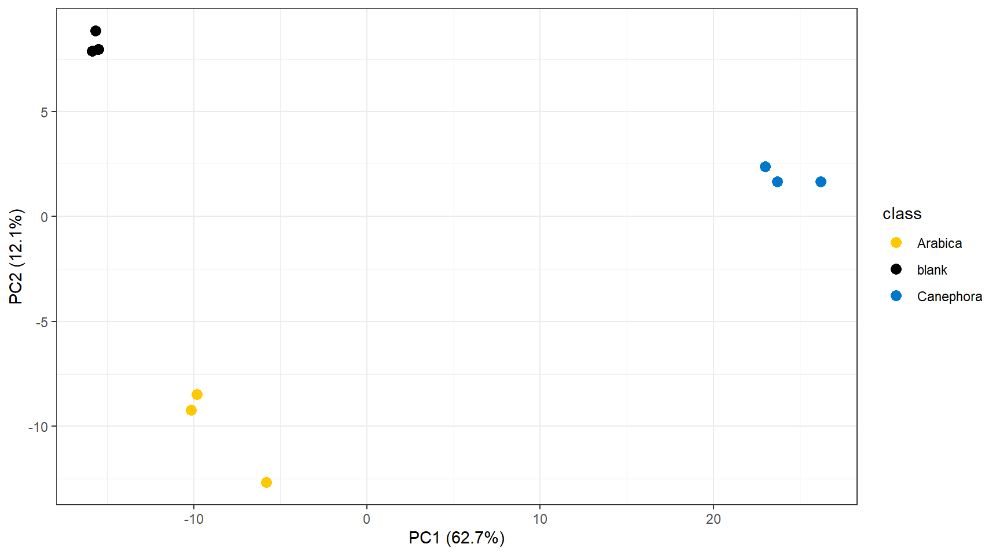
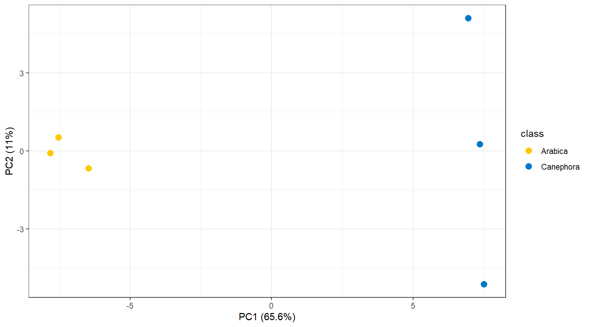
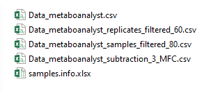

Last modified: 2024-08-07 21:18:22
Compiled: Wed Aug 7 21:50:25 2024
Introduction
This document describes how to use the R package
rIDIMS for the analysis of direct-injection mass
spectrometry data.
In this tutorial we will demonstrate the advantage of generating
in-silico replicas in cases of limited sample analysis. Often in real
analysis cases there is a physical size limitation or small sample
volumes, making it only feasible to perform one injection. In these
cases, it is interesting that there is a robust and reproducible
statistical process for obtaining representative scans of the analyzed
sample.
Data: Coffea arabica and Coffea canephora Beans
We used the MasSpec pen coupled to a mass spectrometer (LTQ-XL,
Thermo Scientific) to quickly and directly analyze the chemical profiles
of coffee beans from 2 coffee species: Coffea arabica L. (arabica) and
Coffea canephora var. robust (robust). In summary, the dataset consists
of 64 files divided into the following categories: blank, Arabica coffee
and Robusta coffee.
To demonstrate the usefulness of generating in-silico replicas, in this
example we will use only 3 mzML files representative of each
category.
Installation
The package should be installed with the pak package. To
install pak use install.packages("pak").
After that install rIDIMS: pak::install("xxxxx url ")
Data prepare
First create a folder for your project. In this case we will create the test_rIDIMS folder.
test.path <- "C:/test_rIDIMS"
dir.create(test.path, showWarnings = FALSE)Now let’s move the coffee project files to the created folder.
file.copy(list.files(system.file('extdata', package = 'rIDIMS'),
full.names = TRUE), test.path, overwrite = TRUE)With the mzML files in your project folder you don’t need to create anything else manually. rIDIMS will now take care of creating the spreadsheet with sample information and general processing.
Run rIDIMS
To open rIDIMS, enter the command below and wait for the application to load.
rIDIMS::start_rIDIMS()After loading, the following screen should appear

The application window is divided into two parts, on the left side we
have the parameters that must be used in data processing. While on the
right side we have sample information.
In the “Spectra files directory” field, enter the path of your project
folder. In this case C:/test_rIDIMS, then click the button
“Make information file”.
Information file
After clicking the button, wait for the samples.info.xlsx file to be created automatically in your project folder. It will open with your system’s native program for .xlsx files. The following screen is expected.

Now fill in according to the replicas and classes of your samples. In this case we only have 3 cases: blank, arabica and canephora. It is important that the codes used for replicas of different classes are not the same. Always use distinct replica codes.

Once this is done, close the editor program and you will be ready to load the data into the application. Click on the “Open information file” button and wait for the data to load. The following screen should appear.

After checking the sample information and configuring the parameters
for processing, everything is ready to go. start the process. To do
this, click on the button below “Start process!”.
You can monitor the status of the process through a log file (.txt) that
is generated in the project folder.
Wait for the processing to finish and the report to be generated.
Analyzing the report
At the end of the process, the message displays the HTML report path. If the report does not open automatically, go to the project folder and open it manually.
O relatório começa mostrando os principais parâmetros do processamento, sendo que a lista total dos parâmetros está no final do arquivo log. Depois mostra como foi a seleção dos scans das amostras exibindo o processo de seleção de scans com base na intensidade e depois a distribuição dos mesmos no conjunto de 3 réplicas. Abaixo pode-se ver o chronogram bruto da amostra CA.

Note que a seleção não segue um padrão estátisco pois ela é feita de maneira dinâmica para gerar um conjunto de amostras que não tenha diferença estatística entre sí. Mais detalhes sobre esse algoritmo pode ser encontrado no artigo da publicação. A distribuição dos scans pode ser visualizada abaixo no chronogram através das cores de cada réplica.

Depois se inicia o processamento das amostras seguindo as seguintes etapas:
- Evaluate features of replicates
- Subtraction of blank (or other) class
- Filter samples
O efeito destas etapas pode ser visualizado através da análise de Principal component analysis (PCA) de antes e depois. Abaixo pode-se visualizar o PCA das amostras antes do processamento.

E abaixo o PCA após o processamento.

As análises geram um relatório e log com nomes específicos (data e
hora), assim você pode testar diversos parâmetros diferentes e depois
avaliar o desempenho comparando os arquivos gerados.
Cada etapa de processamento gera um arquivo .csv com o dataset da etapa
formatado para ser utilizado como input no MetaboAnalyst (https://www.metaboanalyst.ca/) diretamente. Assim, você
pode avaliar de forma independete o efeito de cada etapa de maneira
rápida e fácil.
